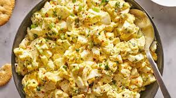

Egg Salad

This egg salad tastes wonderful in a sandwich and will definitely be devoured! It's really good on rye.
Ingredients
- Eggs: Of course, this egg salad recipe starts with eggs!
- Condiments: You'll need mayonnaise and mustard.
- Green onion: Green onions lend a pop of flavor and color.
- Seasonings: This egg salad is simply seasoned with salt, pepper, and paprika.
Steps
- Place eggs in a saucepan and cover with cold water. Bring water to a boil and immediately remove from heat. Cover and let eggs stand in hot water for 10 to 12 minutes. Remove from hot water, cool, peel, and chop.
- Place chopped eggs in a bowl; stir in mayonnaise, green onion, and mustard. Season with paprika, salt, and pepper. Stir and serve on your favorite bread or crackers.